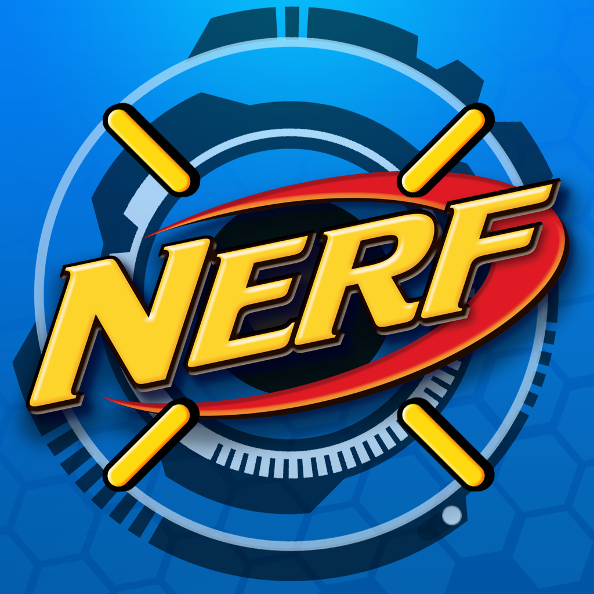

<html>
<head>
    <style>
        body {
            background-color: #000000; /* Sets the background color to black */
            color: #ffffff; /* Sets the text color to white for better contrast */
        }
    </style>
    <meta charset="UTF-8"> <meta name="viewport" content="width=device-width, initial-scale=1.0"> <title>Website Poll
</head>
<body>
    <h2>What is your favorite type of nerf ?</h2>
    <form id="pollForm"> <label>
        <input type="radio" name="type" value="attack"> attack </label><br>
        <input type="radio" name="type" value="defense"> defense </label><br>
    <div>
        Hello everybody, this is my website. This is a web site about nerf. If you want to join this website, then you must be a proper nerfer.In this wesite we can discuss about anything we want. In this website we will also be able to view the things that are happening in the 3 faces. We can also accept or delete any missions that are there. Missions are created to go fight if there are multiple serious bad reportings about the same place by the same people at different times. You can also chat. There are 2 chats which are personal chat and group chat. You can create multiple personal chats but there is only 1 group chat.
    You must also meet me and ask if you want to join the group.</div>
    <split>Activities
    <div>   face 1
        1]
        2]
        3]  
        4]
        5]
    </div><div>
        face 2
        1]
        2]
        3]
        4]
        5]
    </div><div>   
        face 3
        1]
        2]
        3]
        4]
        5]
    </div> 
    </split>
        <div>
For more information I live in tower 14 601 </div>
        
</body>
</html>